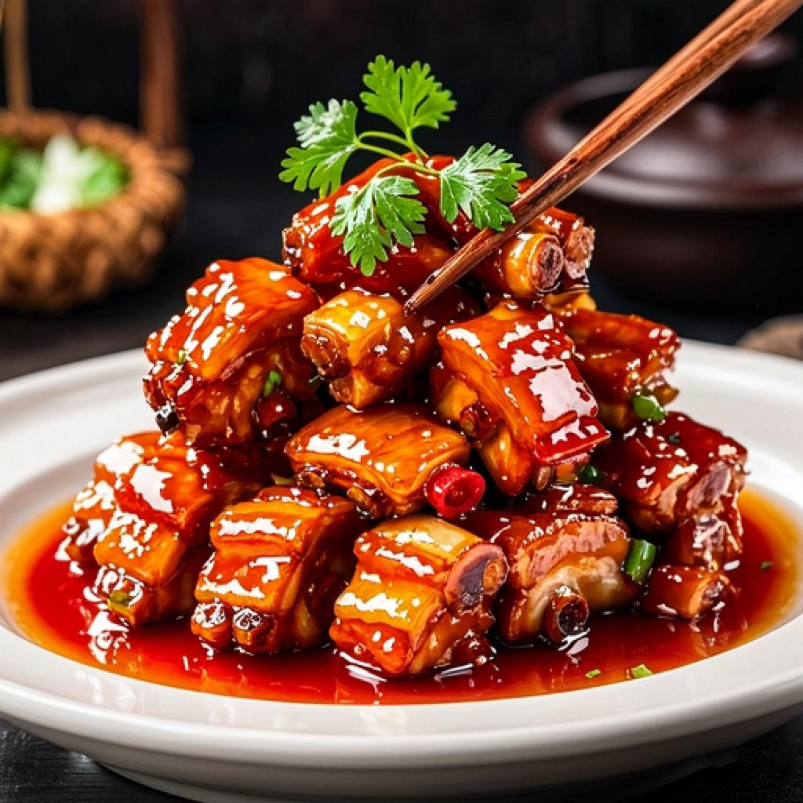

你们发现没？在咱们中国，请客吃饭最能体现诚意和面子的，不是装修多豪华，而是端上桌的那几道“硬菜”！啥是“硬菜”？用咱们老百姓的话说，就是那些大块肉、整条鱼、名贵海鲜、做法讲究，一端上来就能镇住全场，让客人忍不住“哇”出声的菜。可以说，硬菜就是中国式社交的灵魂！ 中国十大待客硬菜，吃过3个会待客，吃过7个太有面，你吃了几道？ 中国十大待客硬菜，吃过3个会待客，吃过7个太有面，你吃了几道？ 今天，咱就结合网友们的口碑和各地传统，盘一盘中国公认的十大“待客撑场面”硬菜。吃过3个，说明你会待客；吃过7个，那绝对是场面人，太有面儿了！ 快来看看，你吃到第几个了？ 你发现没，排骨这东西，怎么做都好吃，但待客就得来一道红烧排骨！成菜色泽红亮油润，酱汁浓郁，排骨软烂脱骨，一上桌那股甜咸交织的肉香直往鼻子里钻。网友们都说，这道菜是无差评收割机，老人小孩都爱，每次上桌都抢着吃，瞬间拉近主客距离！ 中国十大待客硬菜，吃过3个会待客，吃过7个太有面，你吃了几道？ 中国十大待客硬菜，吃过3个会待客，吃过7个太有面，你吃了几道？ 中国宴席讲究“无鱼不成席”，而“蒸”是对一条鲜鱼最大的尊重。清蒸鲈鱼，肉质洁白细嫩，做法极致简约，只靠葱丝、姜丝、热油和蒸鱼豉油提味，吃的就是那一口来自大海的极致清甜。它寓意“年年有余”，火候精确到秒，是考验厨师功力的“隐形高手”，用来待客，不仅吉利，更能彰显主人对食材本味的追求。 中国十大待客硬菜，吃过3个会待客，吃过7个太有面，你吃了几道？ 中国十大待客硬菜，吃过3个会待客，吃过7个太有面，你吃了几道？ 在广东客家乃至全国各地，这道菜都是宴席上的常青树。五花肉经过煮、炸、蒸，变得入口即化，肥而不腻；梅干菜吸饱了肉汁，咸香浓郁，比肉还抢手。有网友说：“这道菜一端上来，配米饭能多吃三碗！”它肉香与菜香完美融合，看似油腻，吃起来却香到没朋友，是经典家常硬菜里的王者。 中国十大待客硬菜，吃过3个会待客，吃过7个太有面，你吃了几道？ 中国十大待客硬菜，吃过3个会待客，吃过7个太有面，你吃了几道？ 想上点“硬货”又怕太贵、太难做？选波士顿龙虾准没错！这道蒜蓉粉丝蒸波士顿龙虾，颜值极高，虾身红亮，粉丝铺底，上面铺满金黄色的蒜蓉和小米辣。上桌前“滋啦”浇上一勺热油，蒜香和鲜香瞬间爆发，满屋飘香。别看它排面大，做法比炒菜还简单，客人一看“哇，有龙虾”，排面直接拉满！ 中国十大待客硬菜，吃过3个会待客，吃过7个太有面，你吃了几道？ 中国十大待客硬菜，吃过3个会待客，吃过7个太有面，你吃了几道？ 如果你是湖南人，或者你朋友无辣不欢，那这道菜绝对能点燃全场。一个硕大的鱼头，上面铺满红彤彤的剁椒，看着就特别有食欲。鱼头的鲜嫩和剁椒的香辣完美融合，鱼肉入味十足，吃得人额头冒汗，直呼过瘾！吃完鱼头，用剩下的汤汁拌一份面条，那叫一个绝，直接掀翻全场气氛。 中国十大待客硬菜，吃过3个会待客，吃过7个太有面，你吃了几道？ 中国十大待客硬菜，吃过3个会待客，吃过7个太有面，你吃了几道？ 这可是北宋大文豪苏东坡亲自“代言”的千年网红菜！它选用上好的五花肉，加黄酒小火慢炖数小时，成品色泽红亮，肥而不腻，酥烂如豆腐，入口即化。夹一块颤巍巍的东坡肉，放在米饭上，看着肉汁慢慢渗透，一口下去，满嘴都是江南的温柔富贵气。这道菜不仅是味觉享受，更是文化符号，招待贵客尤其显品味。 中国十大待客硬菜，吃过3个会待客，吃过7个太有面，你吃了几道？ 中国十大待客硬菜，吃过3个会待客，吃过7个太有面，你吃了几道？ 在广东人眼里，待客的最高礼遇，莫过于一只皮黄肉白、原汁原味的白切鸡。这道菜看似简单，实则对鸡肉品质和火候要求极高。煮好的鸡斩块装盘，皮爽肉滑，蘸上姜葱蓉，鸡肉的鲜嫩和调料的清香相得益彰。它最大程度保留了鸡肉的本味，是粤菜“清鲜”精髓的体现，最能看出主人对食材的讲究。 中国十大待客硬菜，吃过3个会待客，吃过7个太有面，你吃了几道？ 中国十大待客硬菜，吃过3个会待客，吃过7个太有面，你吃了几道？ 你可能会说，豆腐也算硬菜？在四川人眼里，它必须是！麻婆豆腐用最普通的食材，却奠定了下饭的江湖地位。红油包裹着雪白的豆腐，牛肉末和花椒星星点点点缀其中。一口下去，舌尖跳舞，额头冒汗，麻辣鲜香烫酥嫩，七味一体，让人停不下筷子。这道菜不贵，但它代表主人把你当自己人，气氛热络又亲切，是硬菜中的“人情味担当”。 中国十大待客硬菜，吃过3个会待客，吃过7个太有面，你吃了几道？ 中国十大待客硬菜，吃过3个会待客，吃过7个太有面，你吃了几道？ 作为“国菜”代表，北京烤鸭绝对是硬菜中的顶流。它选用优质填鸭，经过吹气、烫皮、挂炉烤制等多道工序。师傅现场片鸭，刀工精湛，每片都连皮带肉，薄厚均匀。用薄饼卷上鸭肉、甜面酱、黄瓜丝和葱丝，一口下去，鸭皮的酥脆、鸭肉的鲜嫩和酱料的香甜在口中完美融合。请客有它在，档次瞬间拉满。 中国十大待客硬菜，吃过3个会待客，吃过7个太有面，你吃了几道？ 中国十大待客硬菜，吃过3个会待客，吃过7个太有面，你吃了几道？ 压轴登场的，必须是这道来自福建的“闽菜之王”——佛跳墙！它用料极为奢华，鲍鱼、海参、花胶、干贝等山珍海味汇聚一坛，用高汤和绍兴酒，文火煨制十几个小时。开坛时酒香扑鼻，汤汁浓稠如金。传说连佛闻了这香味，都要跳墙来尝一尝。一勺汤入口，鲜得人眉毛都要掉下来。这道菜不仅是对厨艺的极致考验，更是待客的最高规格。 中国十大待客硬菜，吃过3个会待客，吃过7个太有面，你吃了几道？ 中国十大待客硬菜，吃过3个会待客，吃过7个太有面，你吃了几道？ 好啦，十大“待客撑场面”硬菜盘点完了。从平民美食到国宴大菜，你吃过几道呢？ 欢迎在评论区留言分享，晒出你家乡的待客硬菜，看看哪个地方的人最好客、最会吃！
